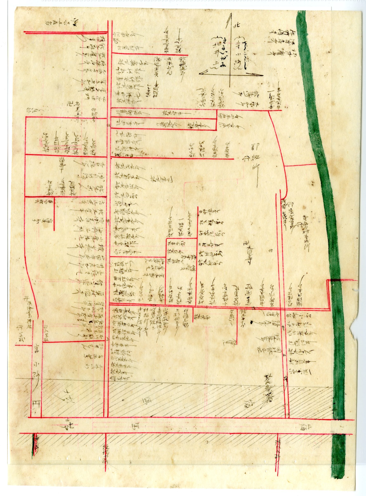

A HOUSE THAT WAS HANDED DOWNその家は、長い時間をかけて受け継がれてきた
百年以上前の地図に、今のあなたの土地につながる区画が描かれている――見付では、それは珍しいことではありません。街道沿いの家、奥に長い敷地、小路に面した一角。そこには、何代にもわたって住み継がれ、相続され、ときに商いが営まれてきた歴史があります。
だからこそ、いざ手放すとなったとき、戸惑うのは自然なことです。建物としては古くても、家としては重い。その感覚を無視して数字だけで進めると、あとで後悔が残りがちです。まずは慌てず、何を確認すべきかを知ることから始めるのが、結局いちばんの近道になります。
CHECKLIST手放す前に、確認しておきたいこと
古い家・相続した土地・空き家を扱うとき、確認すべきことは多岐にわたります。順番に整理しておくだけで、その後の判断がぐっと楽になります。
古い家・相続不動産で整理しておきたい項目
- 相続登記 ― 名義が亡くなった方やさらに前の代のままになっていないか。相続登記は令和六年から義務化されました。売却の前提として、まず名義の整理が必要です。
- 境界 ― 隣地・道路との境界が確定しているか。古い家ほど曖昧なまま受け継がれていることがあります。
- 接道・再建築 ― 道路にきちんと接しているか、解体後に建て替えができるか。古い市街地では要注意です。
- 解体 ― 建物を解体するか、残して売るか。解体費用や、解体後の固定資産税の扱いも含めて検討します。
- 残置物 ― 家財・仏壇・思い出の品の整理。空き家の片付けは、想像以上に時間と心の負担がかかります。
- 空き家の管理 ― 売却までのあいだ、誰がどう管理するか。放置は老朽化や近隣トラブルの原因になります。
- 売るか、貸すか ― 手放すだけが選択肢ではありません。貸す・活用するという道もあります。
- すぐ売らない、という選択 ― 時期や家族の事情によっては、今は動かさないという判断も立派な選択です。

とくに最初の一歩になりやすいのが、相続登記です。明治の見付に登記所が置かれていたように、土地や建物の権利を記録し受け継ぐしくみは、ずっと昔からこの町に根づいてきました。名義の整理は手間に感じられますが、ここを通さないと売却そのものが進みません。逆に言えば、ここを丁寧に片付けることが、すべての出発点になります。
急いで価格を決めることだけが、正解ではない。
DON'T RUSH急いで決めなくていい。まず整理する。
不動産売却というと、「早く・高く売る」ことばかりが注目されがちです。けれど、本当に大切なのは、納得して判断できることです。その土地がどのように使われ、どう受け継がれてきたのか。何を確認し、どんな選択肢があるのか。一度きちんと整理してから考えることで、慌てて決めるより、ずっと納得のいく結論にたどり着けます。
富士ヶ丘サービスは、磐田市見付という土地の歴史を、坪単価だけでは見ていません。相続した家、長く空いている家、古い土地――その背景を一緒に読み解きながら、売る・貸す・残す・今は動かさない、どの選択も含めて、あなたにとって良い形を一緒に考えます。
売る前に、まず整理する。
磐田市見付周辺の相続不動産・空き家・古い住宅・土地売却のご相談を承っています。すぐに売るかどうか決まっていなくても構いません。まずは、家と土地の状況を一緒に整理するところからお手伝いします。相続登記や境界の確認など、最初の一歩からご相談ください。